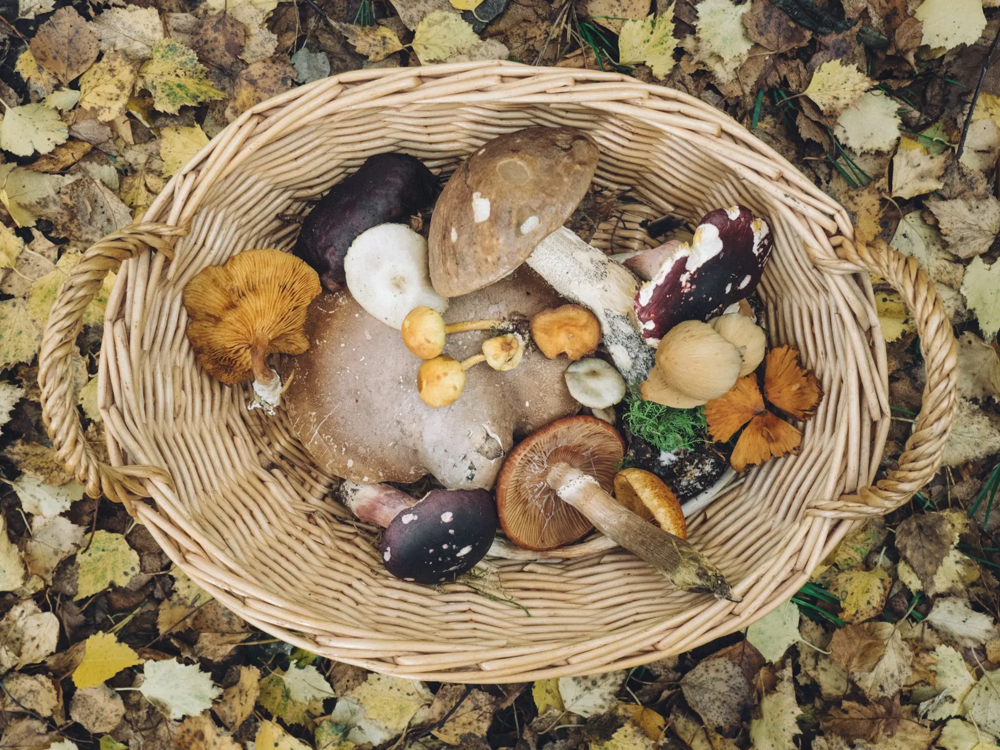
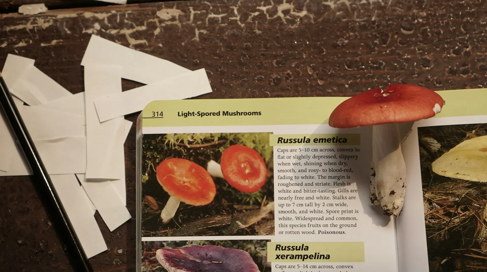
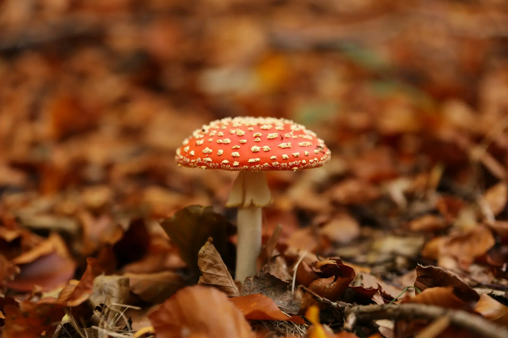
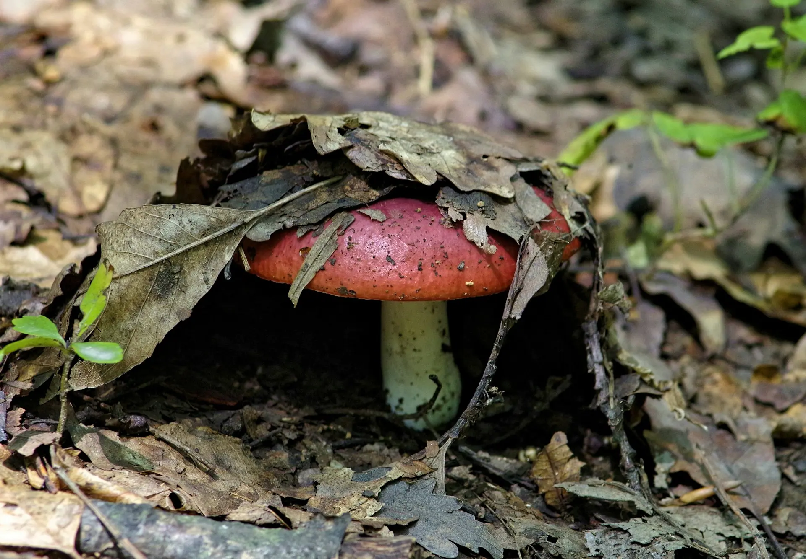

Chanterelle
- edible
- summer
Golden-yellow, funnel-shaped mushroom with false gills

Discover a wide array of mushrooms from around the world, each with its own unique flavor profile and culinary uses.
Whether you're looking for earthy porcinis, delicate chanterelles, or meaty shiitakes, our selection has something for every palate.
Explore the diverse shapes, sizes, and colors of these fungi to elevate your dishes to new heights.

Different species grow in different types of environments.
Forests are always a good starting place, though, with a wide range of species that grow in them.
If you’re after something specific, you can use our reference guide below to help you out.
Golden-yellow, funnel-shaped mushroom with false gills
Distinctive honeycomb-like cap structure
Bright orange bracket fungus with yellow edges
Pale green to white cap with white gills
Fan-shaped caps growing in clusters
White, shaggy appearance like a lion's mane
Pure white mushroom with a sack-like base
Large brown cap with thick stem
Tall white mushroom with shaggy scales
Large, feathery clusters with overlapping gray-brown caps
Brain-like, reddish-brown cap with irregular shape
White to brown cap with thick stem and distinct spicy aroma

You'll need a local field guide, a sharp knife or scissors, a basket or mesh bag for collecting, and paper bags for separating specimens. Bring a small brush for cleaning, wear sturdy boots, and carry a GPS device or compass to track your location. A camera is also helpful to document your finds.

Learn from experienced foragers and reliable guidebooks – never rely on apps alone. Study each mushroom's specific features like cap shape, gill structure, stem characteristics, and spore prints. Start with easily identifiable species that have no poisonous lookalikes, and never eat anything unless you're completely certain of its identification.

Spring is ideal for morels, late summer brings chanterelles and boletes, and fall is peak season for most mushrooms including oysters and hen of the woods. Some species can even be found in winter, especially in milder climates. Each season offers different varieties, so year-round foraging is possible.

Look in deciduous forests, especially near oak and maple trees, and in damp, shaded areas. Fallen logs and dead trees are often productive spots. Only forage on public lands where it's allowed, and always check local regulations. Remember to get permission for private property and keep your best locations private to prevent over-harvesting.